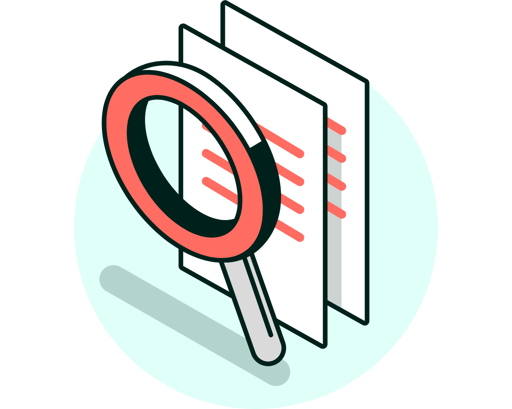

Arbetsmiljöverkets undersökning om arbetsrelaterade besvär
Arbetsmiljöverket genomför vartannat år en omfattande undersökning om arbetsrelaterade besvär. Undersökningen bygger på intervjuer med 13 000 personer som är yrkesverksamma. Resultaten är en del av den officiella statistiken om arbetsmiljö och arbetsskador i Sverige.

Vanliga orsaker till arbetsrelaterade problem 2022:
- För hög arbetsbelastning – Exempelvis för många uppgifter eller för högt tempo
- Påfrestande arbetsställningar eller långvarigt stillasittande
- Krävande möten – Som kontakt med krävande kunder, patienter, anhöriga eller elever
- Tungt arbete – Som att hantera tunga lyft eller förflyttningar
- Otydliga krav – När arbetsgivaren ger motstridiga eller oklara direktiv
- Brist på stöd – Till exempel från chefen eller kollegor
- Långa perioder vid dator eller skärm
- Hög ljudnivå – Som buller eller en stimmig arbetsmiljö
- Monotona arbetsuppgifter – Korta och ständigt upprepade moment
Källa: Arbetsmiljöverket